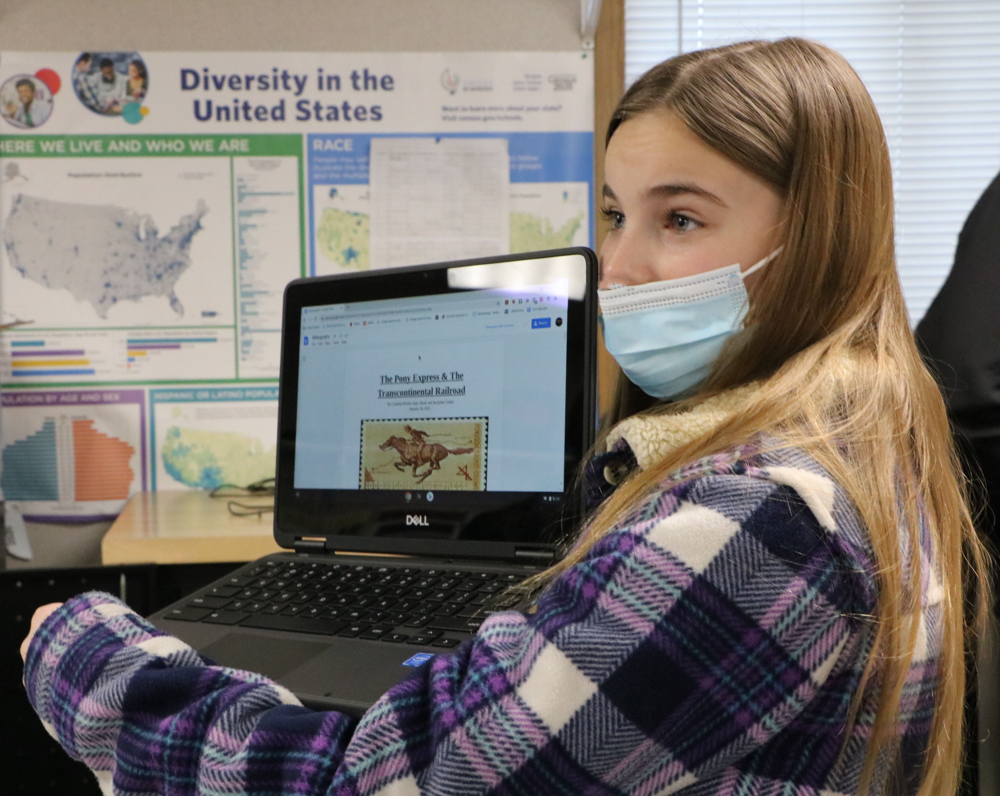
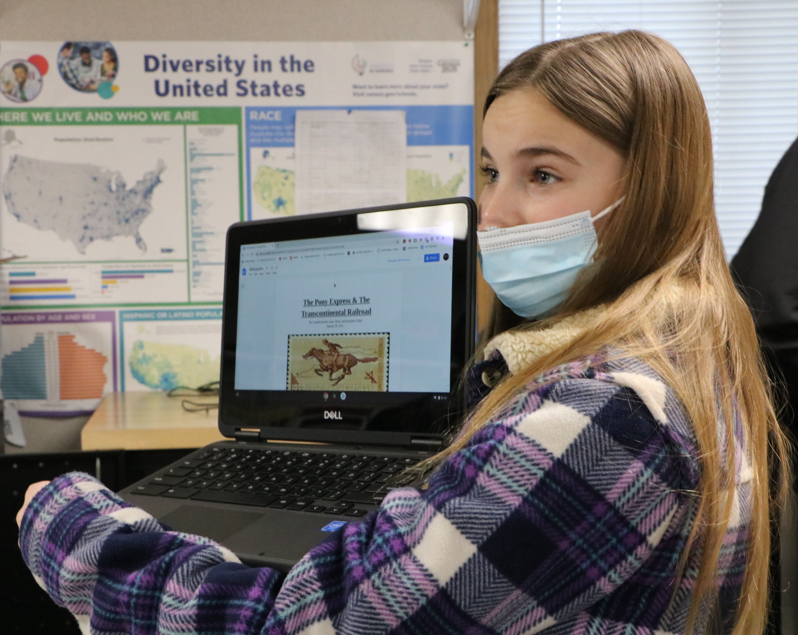
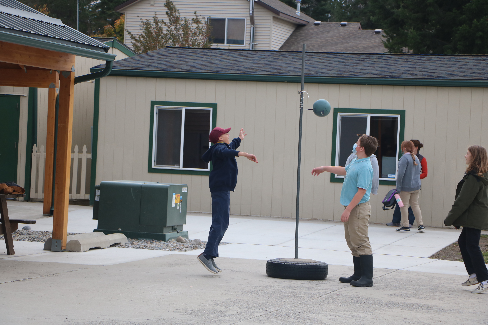
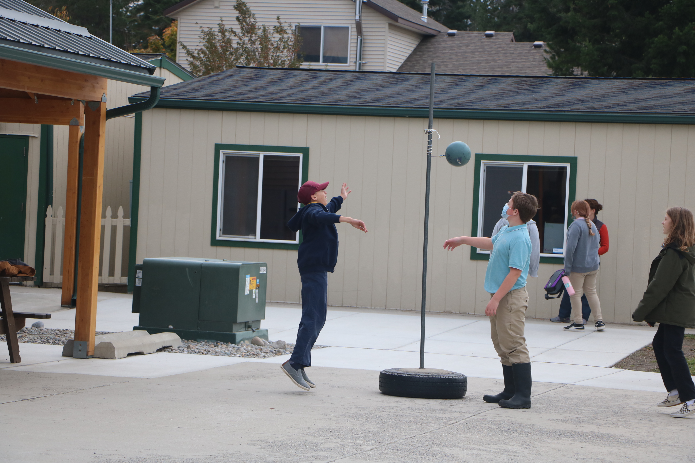
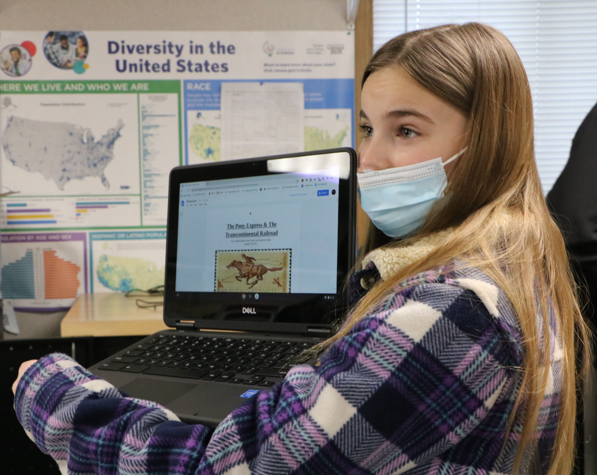
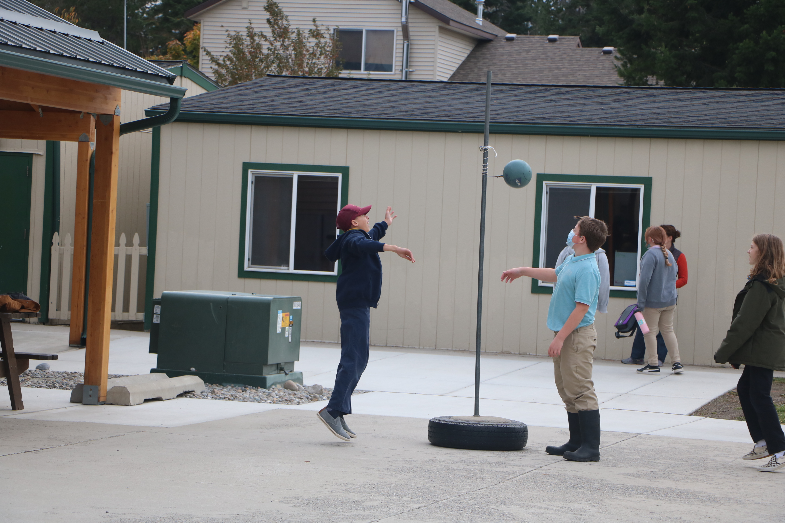

 

At my high school, North Idaho STEM Charter Academy, students were able to take photos and submit them to the yearbook. Over the years I chose to take and submit photos to build my portfolio in photography. I took photos of kids at recess, working on projects, and participating in music class. Below are a few that were published in yearbooks.

